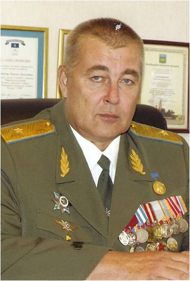

Екимовский Василий Васильевич
(20.05.1959)
Родился в городе Южно-Сахалинске Сахалинской области в семье военнослужащего. Отец, Василий Васильевич, родом из д. Токарево Захаровского сельсовета Кичменгско – Городецкого района, остался на военной службе и сын Василий вместе с отцом жил и учился в школах в военных гарнизонах. Почти каждое лето в период школьных каникул приезжал в гости на родину отца в д. Токарево, жил у дяди и вместе с деревенскими ребятишками играл и купался в водах чистой и прохладной реки Кичменги. По примеру отца стал военным.
В 1981 году окончил Рижское высшее авиационное инженерное училище им. Якова Алксниса по специальности инженер-механик в звании лейтенант-инженер.
С 1981 по 1990 годы проходил службу в 108 учебном авиационном полку Челябинского высшего военного авиационного училища штурманов имени 50-летия ВЛКСМ в должностях от авиационного техника до заместителя командира эскадрильи по инженерно-авиационной службе – начальника ИАС полка. С 1990 года – старший офицер штаба ГО города Котласа. С 1993 года – старший офицер штаба ГО города Вологды. С 1994 по 1999 года – служба на разных должностях в Главном управлении по делам ГОЧС Вологодской области.
С августа 1999 года – начальник Главного управления по делам Гражданской обороны и чрезвычайным ситуациям Вологодской области, а после реорганизации с февраля 2005 года – начальник Главного управления Министерства по чрезвычайным ситуациям России по Вологодской области.
За высокие показатели в боевой подготовке и служебной деятельности генерал-майор Екимовский Василий Васильевич награжден орденом «За службу Родине в Вооруженных Силах СССР» 3 степени, медалью ордена «За заслуги перед отечеством» 2 степени, именным холодным оружием – кортик офицерский, пистолетом ПМ.
Главное управление под руководством генерал-майора Екимовского В.В. на протяжении 4-х лет является лучшим в Северо-Западном Федеральном Округе. Стаж службы в Вооруженных Силах СССР 33 года, в том числе 19 в системе МЧС России.
В начале 2011 года генерал – майор В.В. Екимовский уволился в отставку и был назначен заместителем Губернатора области, председателем областной комиссии по чрезвычайным ситуациям и пожарной безопасности правительства Вологодской области.